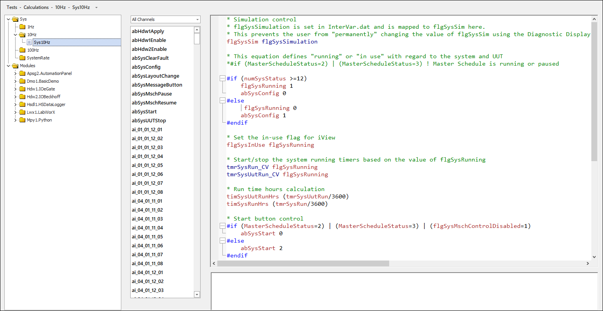

iTest User's Guide
Calculations are a series of periodically calculated formulas. The calculated results are stored as channel values that can be logged, displayed, verified for limits and quality, and more. The following sections describe how to use SolutionBuilder to create and edit calculations. For more information, refer to the Calculations documentation.
Continuous calculations begin as soon as iTest is initialized and continue until the system is exited. Calculations are stored in separate files within folders that represent the rate of calculations. The following calculation folders are available, by default:
For the 1000 Hz calculation folder to appear, the Support1kHz powertek.ini setting must be set to TRUE.
By default, iTest calculations are supported at the following rates: 1 Hz, 10 Hz, 100 Hz, or system rate. To support calculations at a rate up to 1000 Hz, the Support1kHz powertek.ini option must be set to TRUE, and it must be running on a dedicated machine with a real-time operating system. A special task executes and enables the scanning of PIDs, logging, and calculations at rates up to 1000 Hz.
Calculations are executed in the following priority:
 |
CAUTION: | Calculations running at 1000 Hz have the potential to slow the system. Calculations that involve strings are CPU intensive and should be calculated at 10 Hz or 1 Hz. |
Calculations use the following format:
<ChannelName> <Formula>
 |
NOTE: | A single line in the Calculations editor cannot exceed 1023 bytes. |
To manage calculations in SolutionBuilder, select Tests > Calculations from SolutionBuilder’s main menu to open the Calculations editor. The Calculations editor contains four sections: the list of calculations, the helper bar, the editing area, and the build output bar.
Calculations Editor

The following right-click options available in the list of calculations:
Right-Click Options
| Option | Description |
| Add | Adds a new calculation. For more information, refer to the Adding Calculations section below. |
| Remove | Removes the selected calculation. |
| Calculation Order… | Changes the order that calculations are executed within a calculation rate folder. For more information, refer to Ordering Calculations section below. |
| Rename… | Launches the Rename dialog, which allows you to rename the calculation. |
| Duplicate | Duplicates the selected calculation. |
| Cut | Removes the selected calculation and copies it to the clipboard. |
| Copy | Copies the selected calculation to the clipboard. |
| Paste | Pastes the copied calculation. |
| Undo | Undoes the last action. |
| Redo | Redoes the last undone action. |
The following options are available when you right-click in the editing area:
Right-Click Edit Options
| Option | Description | Shortcut Key |
| Cut | Removes the selected text from the editor and copies it to the clipboard. | CTRL + X |
| Copy | Copies selected text in the editor. | CTRL + V |
| Paste | Pastes copied/cut text in the editor. | CTRL + P |
| Find... | Launches the Find and Replace dialog with the Find tab displayed. | CTRL + F |
| Replace... | Launches the Find and Replace dialog with the Replace tab displayed. | CTRL + H |
| Toggle Whitespace | Turns whitespace markings on/off. | CTRL + W |
| Make Uppercase | Makes selected text uppercase. | CTRL + SHIFT + U |
| Make Lowercase | Makes selected text lowercase. | CTRL + U |
| Comment | Comments out a line of text in the calculation. Text does not need to be selected or highlighted to comment it out. | - |
| Uncomment | Uncomments a line of text in the calculation. | - |
| Undo | Undoes the last action. | CTRL + Z |
| Redo | Redoes the last undone action. | CTRL + Y |
| Open Procedure | Opens the procedure based on the text that was clicked on. If the text clicked on is not a name of a procedure, then a dialog displays, indicating that SolutionBuilder cannot find the procedure. The procedures that can be opened via this right-click option are limited to the list of procedures found in the left pane. | - |
| Next Bookmark | Navigates to the next bookmark in the procedure. | F2 |
| Previous Bookmark | Navigates to the previous bookmark in the procedure. | Shift + F2 |
| Preferences... | Launches the Editor Properties dialog, which enables you to modify the appearance of the editor. You can customize the font style and size, display line numbers, and enable outlines for blocks of code. | - |
To add a new calculation, do the following:
#if logic is supported in calculations; however, #while loop functionality is not permitted. For more information about VCL functions that can be used in your calculations, refer to the following documents: VCL Function List, VCL Math and Conversion Functions, VCL Miscellaneous Functions.If there are any test build errors while building the solution, then these errors will display in the Build Output Bar at the bottom of the Calculations editor. In addition, any calculations that contain errors will display in red font in the list.
Example: Calculation with Errors
You can change the order that calculations are executed within a calculation rate folder. This enables you to have a finer control over the order that the files are run. Calculations can only be ordered within a specific rate. In other words, you cannot order 10 Hz and 100 Hz calculations.
To modify the calculation order for a specific folder rate, right-click on a folder and select Order Calculations. This opens the Calculation Order dialog, where you can drag and drop the calculation files to reorder when the calculations are executed.
Ordering Calculations
When finished, click OK. Note that the new order is not reflected visually in the list of calculations.
In addition to the manual reordering of your solution’s calculations, module calculations can be controlled by defining the process order value of each module. A lower process order number places the module’s calculations earlier in the calculation loop. By default, new modules have a process order of 2 and the calculations in the system module have an order of 1. Without adjusting these values, the calculations in the base system occur prior to the calculations in the modules.
|
NOTE: | If two modules have the same order, the order by which they are processed is indeterminate. |